Red
feather star
Himerometra
robustipinna*
Family Himerometridae
updated
Jan 2020
Where
seen? This bright red feather star is sometimes seen near
living reefs on our Southern shores. Sometimes many small ones are
seen on one visit, and then not seen again for some time. At other
times, a single large one may be seen. At Sentosa Serapong, more than 20 can be seen clinging to hard corals.
Features: 6-12cm in diameter.
With more than 30 arms. The cirri on the underside is banded. The
entire animal usually uniformly red, sometimes bright red, sometimes
very dark red. Or mostly red with some yellowish body parts.
Feather friend: Sometimes, a tiny Crinoid shrimp is seen living in this feather star. It closely resembles the feather star in colour and pattern.
|
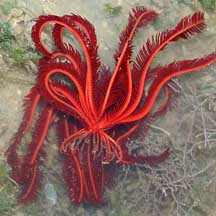
Cyrene Reef, Apr 08 |
|
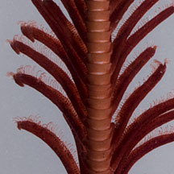
Pulau Hantu, Jan 12 |
|
|
*Species are difficult to positively identify without close examination.
On this website, they are grouped by external features for convenience of
display
| Red
feather stars on Singapore shores |
| Other sightings on Singapore shores |
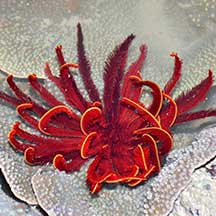
East Coast Park (B), Jun 21
Photos shared by Loh Kok Sheng on facebook. |
|
|
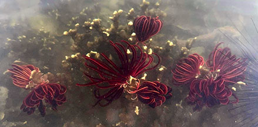
Sentosa Serapong, Jul 25
Photo
shared by Kelvin Yong on facebook. |
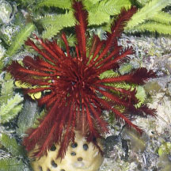
Pulau Tekukor, Jun 16
Photo shared by Loh Kok Sheng on facebook. |
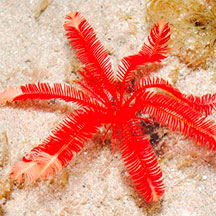
Lazarus Island, Feb 11
Photo
shared by Loh Kok Sheng on flickr |
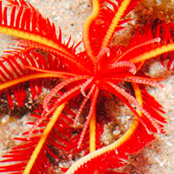
Lazarus Island, Feb 11
Photo
shared by Loh Kok Sheng on flickr |
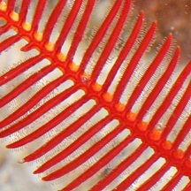
Lazarus Island, Feb 11
Photo
shared by James Koh on his
blog |
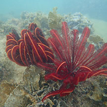
Lazarus Island, Nov 25
Photo
shared by Kelvin Yong on facebook. |
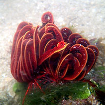
Lazarus Island, Nov 19
Photo
shared by Jianlin Liu on facebook. |
|
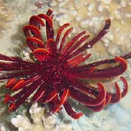
Kusu Island,
Jun 10
Photo
shared by Loh Kok Sheng on his
blog. |
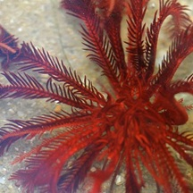
St. John's
Island, Apr 12
Photo
shared by Russel Low on facebook |
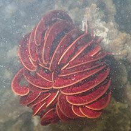
St John's Island, Jun 24
Photo shared by Kelvin Yong on facebook. |
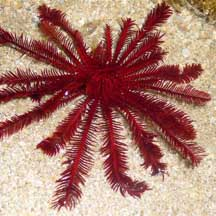
Sisters Island, Aug 07
Photos shared by Loh Kok Sheng on his
blog. |
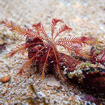
Terumbu Selegie, May 24
Photo shared by Richard Kuah on facebook. |
|
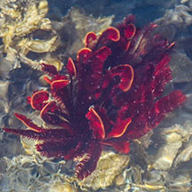
Terumbu Hantu, Jul 20
Photo shared by Jonathan Tan on facebook. |
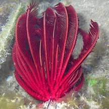
Terumbu Raya, Mar 09
Photo shared by Loh Kok Sheng on his
flickr. |
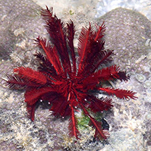
Pulau Semakau North, Jul 15
Photo
shared by Loh Kok Sheng on facebook |
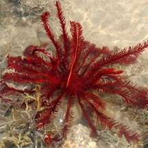
Terumbu Bemban,
Apr 11
Photo shared by Loh Kok Sheng on his
blog. |
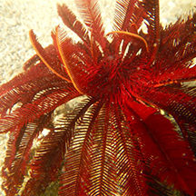
Terumbu Bemban, Jun 15
Photo
shared by Russel Low on facebook |
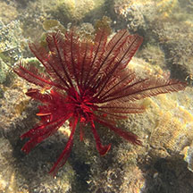
Terumbu Bemban, Aug 23
Photo
shared by Tommy Arden on facebook |
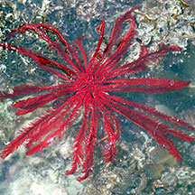
Beting Bemban Besar, Jun 19
Photo
shared by Jianlin Liu on facebook. |
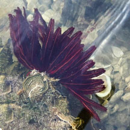
Beting Bemban Besar, Oct 25
Photo
shared by Lon Voon Ong on facebook. |
|
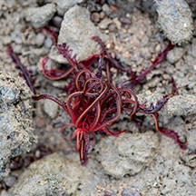
Terumbu Pempang Tengah, Nov 18
Photo
shared by Juria Toramae on facebook. |
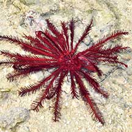
Terumbu Pempang Tengah, May 21
Photo
shared by Loh Kok Sheng on facebook. |
|
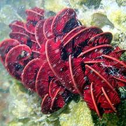
Pulau Salu, Apr 21
Photo
shared by Jianlin Liu on facebook. |
|
|
|
Links
References
- Lane, David
J.W. and Didier Vandenspiegel. 2003. A
Guide to Sea Stars and Other Echinoderms of Singapore.
Singapore Science Centre. 187pp.
|
|
|